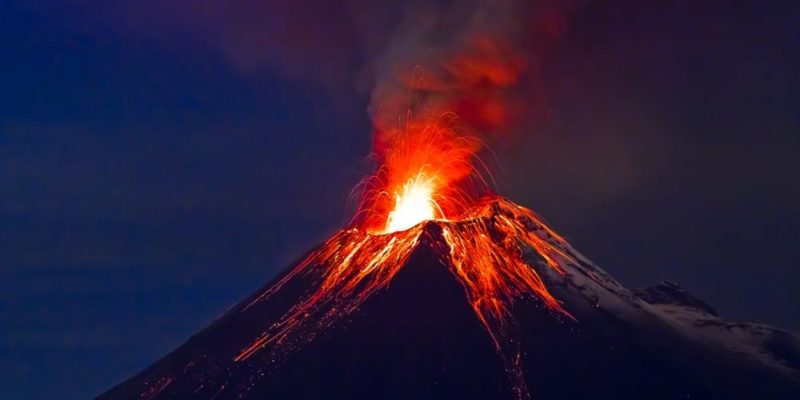

¿Qué es el clima?
Se refiere a las condiciones climáticas que permanecen en una región a lo largo
de un año y que en promedio se repite varios años.

Influye directamente en:
1.-Salud
Gracias al cambio climatico y su aumento de temperatura, es más frecute que suframos:
Vasodilatación periférica,
sudoración abundante,
pérdida de agua y
electrólitos a través de la piel.
En situaciones muy extremas se puede dar el llamado golpe de calor, que causa hipotermia,
deshidratación, dolor de cabeza y afectación del sistema nervioso central.
2.-Biodiversidad
Efectos gracias al cambio climatico:
Transformación de la fisiología,morfología y cambios climáticos.
Variaciones y distribuciones de diversas especies.
Cambios en las precipitaciones, inundaciones y sequía.
3.-Calidad de vida
El medio ambiente afecta directamente el estado de salud y juega un papel importante en
la calidad de vida, los años de vida saludable vividos y las disparidades en la salud.
La mala calidad del aire está relacionada con la muerte prematura, el cáncer y daños a
largo plazo en los sistemas respiratorio y cardiovascular.
Causas del cambio climatico:
Efecto Invernadero
Volcanes
Transporte contaminante


Deforestación
Metano
Agricultura y ganaderia